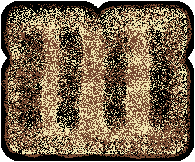

REQUIRED MATERIALS
- Bread
- Tree Nut or Legume Spread
- Fruit Preserves
- One of the following Utensils
- One Toasting apparatus
- (Optionally) One Segment of Paper Towel
TOASTING GUIDE
The instruction section takes into account how toasted the toast is by abstracting and measuring visually how the toast looks. The instruction section measures this aspect this on a one to five scale. The following diagram describes visually how each value on the scale looks.
This is meant to make the measuring of toast removed from the nebulous standards of toasters.
STEPS FOR CONSTRUCTION
This instruction will take roughly six to eight minutes to complete for one slice of bread and even more depending on the number of slices. Read through all directions before following. Be sure to wash your hands before handling food.
- Toasting
- Partition or slice the number slices of bread desired. Place within a Toasting apparatus for any desired toasting value.
- After toasting, remove the toast and place it on an optional segment of paper towel for dressing.
- Dressing
- Grab the utensil by the serving end and mix the jam with the handle. But do not let more than half of the handle get covered in jam.
- After mixing hold the container above the toast and angle the mouth of container so the jam slides out of the container and on to the toast,
while also using the handle of the utensil to guide the amount of jam on to the toast. - After the jam is on the toast, use the end of the handle to scrape the remaining jam on the mouth of the container back into it then close the container.
- Scrape the remaining jam on the handle on to the toast, wipe it on the optional paper towel, and rinse it off at your discretion.
- Hold the utensil by its proper handle and use the serving end to gather the peanut butter from the container.
- If only dressing one toast scrape the peanut butter on to the corner of the toast.
- If dressing multiple toasts get a large enough amount of peanut butter so that the weight of the peanut butter causes a portion of it to fall on to the toast.
- Each Toasting value requires a different ratio of toppings, they are as follows:
| TV | PB : J | Why |
|---|---|---|
| 7 : 9 | The weaker presence of the texture of the toast requires a smaller ratio of jam. | |
 |
7 : 11 | The firmer texture of the toast provides an increase in the ratio of jam in order to balance the dryness of the toast. |
| 9 : 11 | The crunchier texture of the toast provides an increase in the ratio of peanut butter as it will not over power the texture of toast. | |
|  | 9 : 13 | The bitterness of the toast requires an increase in the ratio of jam in order to have the sweetness balance it out. |
| 7 : 13 | The bitterness of the toast requires a decrease in the ratio of peanut butter to allow the stronger presence of jam to balance it out. | |
| Finally, the optimal topping to toast ratio is 2 : 3 | ||
- Spreading
- Use rounded bottom of the serving end of the utensil to apply light pressure to the toppings and start with spreading the portion of peanut butter on the toast in a clock wise direction to ensure coverage of the crust. Spreading the peanut butter first ensures the peanut butter can stick to the toast.
- Next spread the jam on the toast in the same direction. Starting with spreading the jam however would lead to difficulty in spreading the peanut butter and loosen the texture of the toast. Jam provides a moisture and sweetness element to the peanut butter that comes out when they are spread using this method.
- Holding the toast in one hand and spreading with the other works to ensure an even spread, however letting it rest on the table works as well.